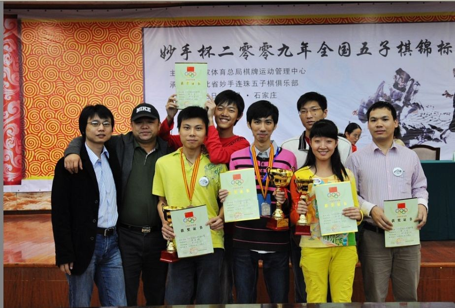
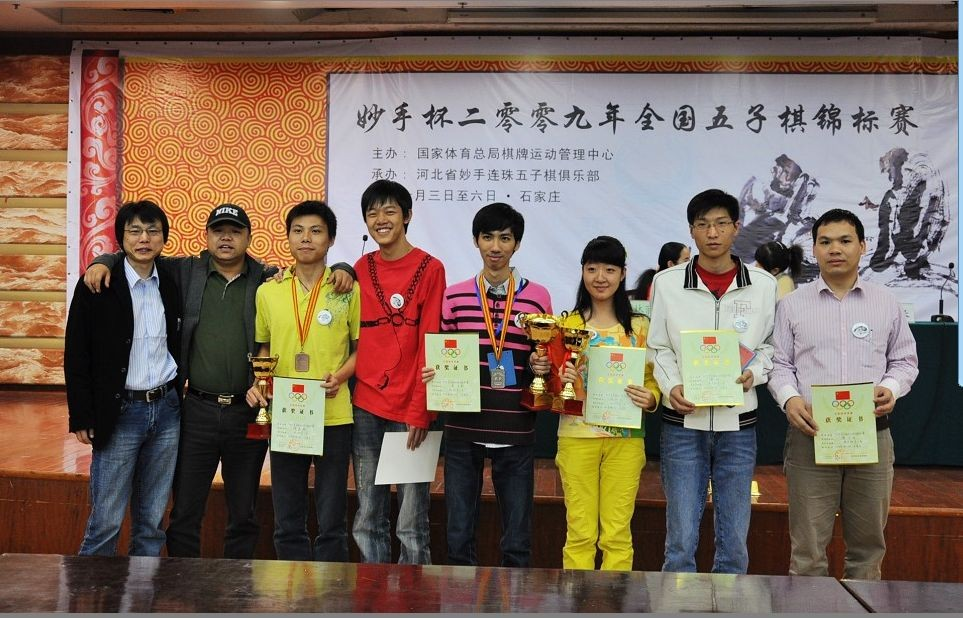
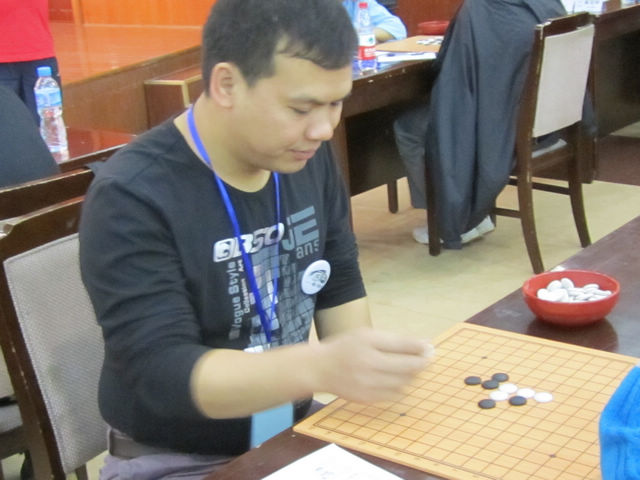
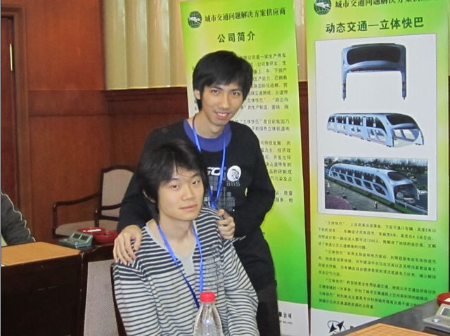
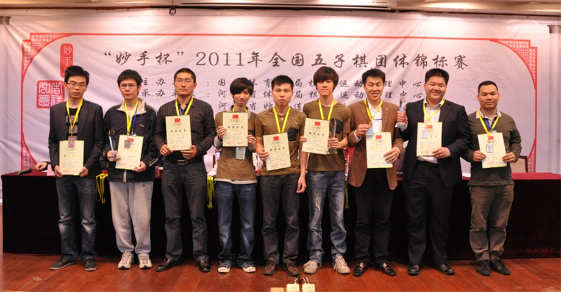
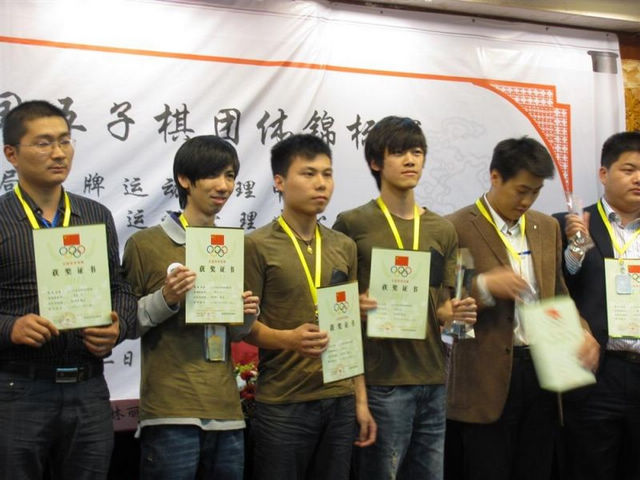
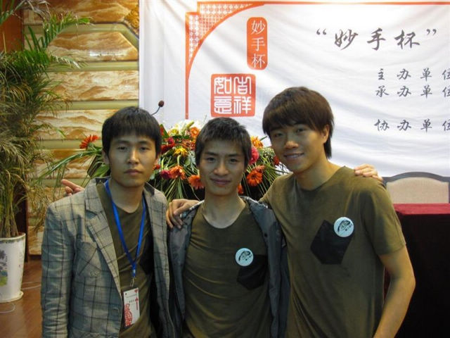

#2 Re:走近炫飞 作者：被感动的人 发表时间：2011-5-10 21:46:57

2009全锦赛之罔两、菜农、无聊、混混、清缘、梦、流逝、白痴
感动：这次来到“你的故事”的是社团重量级的管理和棋手代表，炫飞本身不爱宣传，很多爱好者对你们了解很少。大家是做一下自我介绍还是互相介绍一下？
炫飞☆白痴：我就介绍介绍天才吧，天才绝对是炫飞的天才。
炫飞☆谭鑫麟：我自我介绍一下。我名字挂在头上，性别男。【感动半天没说话，旁边一人过来T了一脚大喝曰：采访中不许走神！感动委屈地：额米走神啊，额已经数出刚才谭同学一共说了
#3 Re:走近炫飞 作者：被感动的人 发表时间：2011-5-10 21:47:04

2010“立体快巴-妙手杯”全国五子棋锦标赛-白痴 2010全锦赛之清缘与曹冬
感动：这次比赛炫飞派出了4队共12名棋手，无论是取得冠军的2队还是没有夺冠的其它三队，炫飞棋手的精神一样让我们折服。作为一个团结奋斗的炫飞整体，平时大家又很少见面，比赛期间一定发生了很多有意思的事情，我们一起回忆回忆吧！比如那个必胜客，刚才说吃了三回了？很远吗？为什么走着去都值得提出来？
炫飞☆天天才：撑S，都吃的变成白痴――圆的啦！
#4 Re:走近炫飞 作者：被感动的人 发表时间：2011-5-10 21:47:12

2011年“妙手杯”全国团体赛男子前三名领奖
感动：这算是炫飞的理念和执着吗？我查过资料，炫飞社团是2006年7月成立的，至今已经是第五个年头，自从08年炫飞参加实战以来，很多棋手都是历任几届实战选手了，可说已经达到了很好的中短期效应。而且有些棋手即使有一两次没有代表社团出战，也一直心属炫飞。这其中一定有一种精神和理念，你们认为是什么呢？炫飞的社团经营注重什么？
炫飞☆玲玉@：其实就是一个用心交心，人如果不真正真心付出到哪里都不会长远。在这个现实社会能够彼此用心去对待的事情跟人已经太少了，所以遇到了大家走到一起了走到现在了都很珍惜。
炫飞☆冰弦：炫飞是06年成立的，但是那时99还在国外读书，没时间打理社团，所以到07年3
#5 Re:Re:走近炫飞 作者：被感动的人 发表时间：None

2011全团赛之炫飞2队（清缘 无聊 混混） 2011全团赛之炫飞3队（白菜 灵石 焦比）
感动：说到新的棋手和管理，炫飞的管理人员这几年来是相对稳定还是有较大变化？接班方面顺手吗？
炫飞☆简单：管理人才慢慢带，先做管理再做群主、族长。
炫飞☆冰弦：管理还是比较稳定，现在一直在以老带新。
炫飞☆白痴：以后会是虫猪长的天下吗？
炫飞☆简单by:web版  IP：
已记录
IP：
已记录
#6 Re:走近炫飞 作者：被感动的人 发表时间：2011-5-10 22:52:19
特别感谢提供照片的白白和冰弦~
特别感谢在我网络抽风的情况下一直帮忙编辑帖子的蓝天姐姐！
［此帖子已被 被感动的人 在 2011-5-11 20:21:56 编辑过］
［ 蓝天蓝 于 2011-5-11 20:38:10 时花20金币送鲜花一朵］
#7 Re:走近炫飞 作者：名儿 发表时间：2011-5-10 23:27:10
 炫飞加油，看了满感动的，是一个经历了很多很多的社团，你们的故事都让人感动，能有今天的成就是你们的努力和团结换来的，我们棋心愉悦向你们学习～！希望以后网络社团能发展得更好～！
炫飞加油，看了满感动的，是一个经历了很多很多的社团，你们的故事都让人感动，能有今天的成就是你们的努力和团结换来的，我们棋心愉悦向你们学习～！希望以后网络社团能发展得更好～！
［ 冰雪笑醉 于 2011-5-10 23:42:45 时花20金币送鲜花一朵］
［ 于 2011-5-10 23:46:02 时花20金币送鲜花一朵］
［ 被感动的人 于 2011-5-11 19:19:29 时花20金币送鲜花一朵］
［ 炫飞冰弦 于 2011-5-12 0:20:13 时花20金币送鲜花一朵］
#8 Re:走近炫飞 作者：老奶奶 发表时间：2011-5-10 23:33:26
感谢国家感谢党……
［ 冰雪笑醉 于 2011-5-10 23:43:25 时花20金币送鲜花一朵］
［ 被感动的人 于 2011-5-11 20:22:27 时花20金币送鲜花一朵］
#9 Re:走近炫飞 作者：冰雪笑醉 发表时间：2011-5-10 23:40:23
感谢CCTV，感谢爱五子棋网，感谢感动，感谢所有关心炫飞的人~~~~~~~~~
［此帖子已被 冰雪笑醉 在 2011-5-10 23:41:02 编辑过］
［ 于 2011-5-10 23:46:40 时花20金币送鲜花一朵］
［ 被感动的人 于 2011-5-11 20:26:08 时花20金币送鲜花一朵］
#10 Re:Re:走近炫飞 作者：伊依 发表时间：2011-5-10 23:48:09
真了不起

［ 被感动的人 于 2011-5-11 19:19:41 时花20金币送鲜花一朵］
#11 Re:走近炫飞 作者：None 发表时间：2011-5-11 0:03:21
炫飞谢谢“被感动的人”不辞辛苦的收集、整理了炫飞如此多的资料，此资料可以说是第一部最齐全的《炫飞百科》。从此炫飞人将以此为依托惦念、铭记、续写炫飞的点点滴滴。。。。。。
［ 蓝天蓝 于 2011-5-11 6:26:16 时花20金币送鲜花一朵］
［ 虎哥 于 2011-5-11 10:38:05 时花20金币送鲜花一朵］
［ 被感动的人 于 2011-5-11 20:27:12 时花20金币送鲜花一朵］
#12 Re:走近炫飞 作者：秋风雾语 发表时间：2011-5-11 0:25:58
默默无闻的我，悄悄的路过
［ 被感动的人 于 2011-5-11 20:27:21 时花20金币送鲜花一朵］
#13 Re:走近炫飞 作者：炫飞水月 发表时间：2011-5-11 0:33:14
感谢CCTV，感谢MTV，感谢那些时刻关注炫飞的人们，本人虽隐退数年，但是对于炫飞的点点滴滴，仍然记忆犹新。在岁月的长河中，炫飞的故事，犹如点点浪花永不停息，加油炫飞！！！加油炫飞的猪们，你们都是好样的
［ 于 2011-5-11 17:37:36 时花20金币送鲜花一朵］
［ 被感动的人 于 2011-5-11 20:27:32 时花20金币送鲜花一朵］
#14 Re:走近炫飞 作者：炫飞水月 发表时间：2011-5-11 0:42:42
本人补充一点  炫飞家族：原名：ヂtァ飞~湮メ灭 为了便于家族向现实发展，故而改名炫飞棋社。
炫飞家族：原名：ヂtァ飞~湮メ灭 为了便于家族向现实发展，故而改名炫飞棋社。
［此帖子已被 炫飞水月 在 2011-5-11 1:04:55 编辑过］
［ 被感动的人 于 2011-5-11 20:27:48 时花20金币送鲜花一朵］
#15 Re:走近炫飞 作者：蓝天蓝 发表时间：2011-5-11 6:27:29
祝炫飞越来越好，越来越昌盛
［ 被感动的人 于 2011-5-11 20:27:58 时花20金币送鲜花一朵］
#16 Re:走近炫飞 作者：蓝天蓝 发表时间：2011-5-11 7:34:55
终于看完了全文，看这样的长篇文章，说实话我一直没有耐心，可是这次却让我一直不肯放弃不看了，越看越想往下看，想多了解一下炫飞的人，越看越让我感动，真的让我很感动，谢谢妹妹对炫飞 的采访，让我们可以更多的了解炫飞，看的时候，有的话让我感动的留下的眼泪，看到他们开玩笑的说法，又忍不住抿着嘴笑了，炫飞家族真的值得让人钦佩，也让人羡慕可以有这样一个家族，大家一起学习交流五子棋，真是一个非常好 的网络大家庭！！
［ 被感动的人 于 2011-5-11 20:28:09 时花20金币送鲜花一朵］
#17 Re:走近炫飞 作者：无尽 发表时间：2011-5-11 8:41:52
微笑辛苦了 专题做得很不错

［ 被感动的人 于 2011-5-11 20:28:20 时花20金币送鲜花一朵］
#18 Re:走近炫飞 作者：慕容晓文 发表时间：2011-5-11 9:41:00
原来清缘是黄立勤……
［ 被感动的人 于 2011-5-11 20:28:42 时花20金币送鲜花一朵］
#19 Re:走近炫飞 作者：周光乐 发表时间：2011-5-11 10:48:02
厉害啊
［ 被感动的人 于 2011-5-11 20:28:54 时花20金币送鲜花一朵］
#20 Re:Re:走近炫飞 作者：蓝天蓝 发表时间：None
引用：
原文由 炫飞水月 发表于 2011-5-11 0:42:42 :本人补充一点
［此帖子已被 炫飞水月 在 2011-5-11 1:04:55 编辑过］
走近炫飞
≮炫飞☆棋社≯为一网络五子棋社团，原名：ヂtァ飞~湮メ灭，成立于2006年7月8日，正式发展于2007年3月。08年开始参加现实比赛，并在2009年和2011年两次获得全国团体赛冠军。
by:web版 IP：
已记录
#21 Re:走近炫飞 作者：炫飞花 发表时间：2011-5-11 13:05:41
被感动感动了
［ 被感动的人 于 2011-5-11 20:24:40 时花20金币送鲜花一朵］
#22 Re:走近炫飞 作者：蓝天蓝 发表时间：2011-5-11 20:13:56
真是辛苦 微笑 妹妹了， 一直在整理编辑照片。辛苦了微笑妹妹
［ 炫飞冰弦 于 2011-5-12 0:07:47 时花20金币送鲜花一朵］
［ 炫飞冰弦 于 2011-5-12 0:08:02 时花20金币送鲜花一朵］
［ 炫飞冰弦 于 2011-5-12 0:08:15 时花20金币送鲜花一朵］
#23 Re:走近炫飞 作者：被感动的人 发表时间：2011-5-11 20:34:26
谢谢大家的关爱和鲜花以及回复，更多炫飞精彩内容在炫飞版块。另外后续还有一些活动。
特别感谢给了我经历这样一次感动的炫飞，感谢提供照片和注解的冰弦，感谢水月的说明，感谢在我网络凄惨的情况下一直帮我编辑帖子的蓝天姐姐！
［ 炫飞冰弦 于 2011-5-12 0:08:26 时花20金币送鲜花一朵］
［ 炫飞冰弦 于 2011-5-12 0:08:37 时花20金币送鲜花一朵］
［ 炫飞冰弦 于 2011-5-12 0:08:48 时花20金币送鲜花一朵］
#24 Re:走近炫飞 作者：虎哥 发表时间：2011-5-11 22:12:57
才知道姐姐这篇文章搞了好几个星期，姐姐辛苦了！！
［ 炫飞冰弦 于 2011-5-12 0:09:07 时花20金币送鲜花一朵］
#25 Re:走近炫飞 作者：炫飞冰弦 发表时间：2011-5-12 0:06:17
谢谢微笑和蓝天蓝 辛苦了，鲜花送上！！
#26 Re:走近炫飞 作者：蓝天蓝 发表时间：2011-5-12 9:04:07
添加了音乐很不错
［ 于 2011-5-12 13:34:24 时花20金币送鲜花一朵］
#27 Re:走近炫飞 作者：蝶羽 发表时间：2011-5-13 7:45:26
2楼第二组，3楼第二组图片太大，影响阅读了。
［ 蓝天蓝 于 2011-5-13 22:32:04 时花20金币送鲜花一朵］
［ 蓝天蓝 于 2011-5-13 22:32:49 时花20金币送鲜花一朵］
［ 蓝天蓝 于 2011-5-13 22:33:49 时花20金币送鲜花一朵］
#28 Re:走近炫飞 作者：三国老凯 发表时间：2011-5-13 21:45:33
姐太厉害了 。。。。。［ 被感动的人 于 2011-5-13 22:27:06 时花20金币送鲜花一朵］
#29 Re:走近炫飞 作者：被感动的人 发表时间：2011-5-13 22:29:09
因为电脑屏幕的问题，我每次编辑图片帖子都纠结小屏幕的朋友能不能看全，以前我就不信注册不上帮我试过，现在和以后也希望有读者发现不能看全的情况能告诉我，以便调整。
小凯你抓紧帮我看看哈~
#30 Re:走近炫飞 作者：浩瀚铭剑 发表时间：2011-5-16 19:41:07
微笑姐，辛苦了。
［ 被感动的人 于 2011-5-16 20:54:57 时花20金币送鲜花一朵］